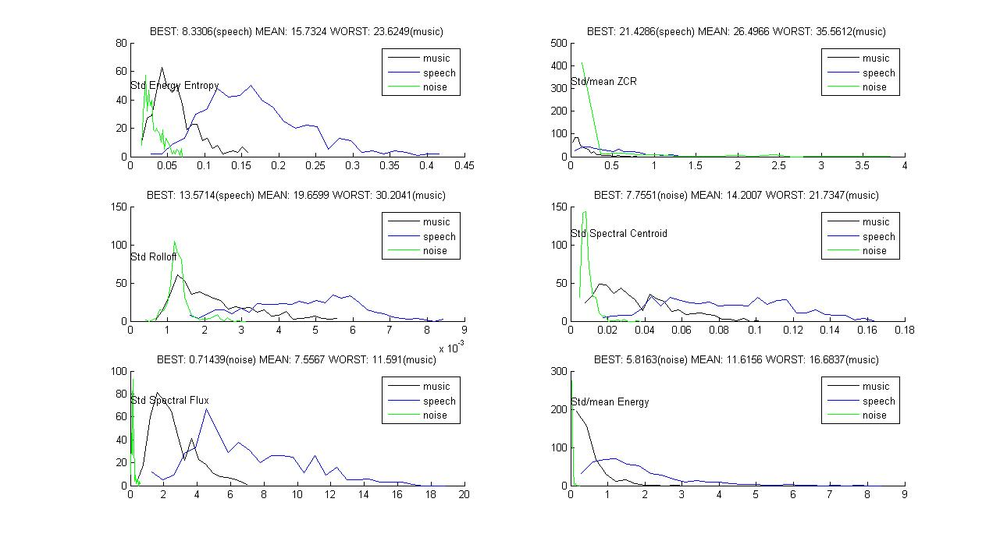

| Some Basic Audio Features | Theodoros Giannakopoulos Department of Informatics and Telecommunications Univarsity of Athens, Greece website: www.di.uoa.gr/~tyiannak |
General
Feature extraction (as in most pattern recognition problems) is maybe the most important step in audio classification tasks. The provided Matlab code computes some of the basic audio features for groups of sounds stored in WAV files. Furthermore, a simple class separability measure, based on feature histograms is used for measuring the ability of each feature to be used for classifying the given classes. Therefore, you can use the provided m-files for computing the features of an audio classification problem (i.e. specific audio classes) and understanding "how good" those features are for the specific classification task.
Feature Calculation
The features are calculated in a two-step way:
| STEP 1 | The audio signal is broken into short-term non-overlapping windows (frames) of 50 mseconds. For each frame, 6 features are calculated: Energy Entropy, Energy, Zero Crossing Rate, Spectral Rolloff, Spectral Centroid and Spectral Flux. This step leads to 6 feaure sequences for the whole audio signal. |
| STEP 2 | In the sequel, for each of the 6 feature sequences, a simple statistic is calculated. For example, the standard deviation value of the Spectral Rolloff sequence. This step leads to 6 single statistic values (one for each feature sequence). Those 6 values are the final feature values that characterize the input audio signal. |
In particular, the following audio features and respective statistics are extracted for each audio segment:
| Features | Statistics |
| Energy Entropy | Standard Deviation (std) |
| Signal Energy | Std by Mean (average) Ratio |
| Zero Crossing Rate | Std |
| Spectral Rolloff | Std |
| Spectral Centroid | Std |
| Spectral Flux | Std by Mean Ratio |
In order to compute the 6 feature statistics for a specific .wav file, you can use the computeAllStatistics(fileName, win, step).
Audio Feature Separability
After the features are calculated,
a) the histograms of each feature for all classes are estimated
b) a simple algorithm is used for estimating the separability of the audio classes. In other words, a measure that describes how "easily" the features will be classified. In the case of a multi-class classification problem, the measure is calculated for EACH CLASS opposed to ALL OTHER CLASSES, i.e. a measure value FOR EACH CLASS is computed. The algorithm is described in detail in http://www.mathworks.com/matlabcentral/fileexchange/loadFile.do?objectId=18791&objectType=FILE#.
Execution Example
The main function of this demo is computeFeaturesDirectory(). The only recuired argument is a cell array with the names of the directories in which the .wav files of the respective classes are stored. For example, suppose you have three folders named MUSIC, SPEECH and NOISE, each one containing wav files with relevant audio content (i.e. wav files of segments containing music, speech and noise). In order to compute the audio features of those files simply write:
>> F = computeFeaturesDirectory({'music','speech','noise'});
The result may look like the following figure. There, you can see the 3 histograms (of the 3 classes: music, speech and noise) for 6 six features. Also, for each feature the best, worst and average value of the seperability measure for the specific classification problem is plotted.
For example, for the 1st feature, the best separability measure is 8.3% (speech), which means that the classification error, using the histogram methods, for the binary classification problem of SPEECH vs NON-SPEECH (music, noise) is 8.3% using this feature. Also, for the same feature the classification error for the problem of MUSIC vs NON-MUSIC is 23.6%.
